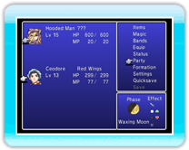

14 |
Der Menübildschirm / Menüsteuerung |
 |
|
Drücke

● „Party“ (Gruppe)Wähle „Party“ (Gruppe), um die Charaktere in deiner Gruppe neu anzuordnen. Wähle dazu zuerst einen Charakter aus und anschließend den Ort oder den Charakter, mit dem er den Platz tauschen soll. Drücke 
● FormationIn diesem Menü kannst du festlegen, wo sich die Charaktere in dieser Formation positionieren sollen. Charaktere, die sich hinten befinden, verlieren bei physischen Angriffen (mit einigen Ausnahmen) an Angriffskraft und Präzision, erleiden allerdings weniger Schaden durch Feindeinwirkung als diejenigen Gruppenmitglieder, die sich weiter vorne befinden.
|
 zum Bestätigen.
zum Bestätigen. |
 |
 |